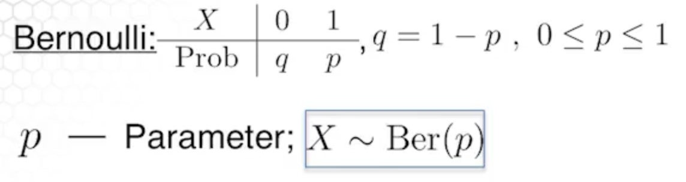

Basic Distributions¶
Random variables¶
Random variables are not variables, they are mappings. A random variable \(X\) is a function mapping the sample space \(S\) to the real numbers \(\mathbb{R}\).

Example: Flip a fair coin. If heads, pay $1. If tails, get $1. Your gain in one flip is a random variable, mapping \(\{H,T\}\) to \(\{-1,1\}\).
Random variables can be discrete or continuous.
Discrete random variables¶
Discrete random variables can be represented by a table. This mapping is called a probability mass function.
Some notation -
The sum of all possible outcomes equals 1.
Continuous random variables¶
The events map to points in an interval. We use a probability density function (pdf) instead of a probability mass function (pmf).

We calculate the probability of an event happening in the interval \(I\) as -
Integrating over all possible values yields 1 -
Discrete distributions¶
Bernoulli distribution¶
The Bernoulli distribution is like flipping a potentially unfair coin once.

Binomial distribution¶
The binomial distribution is like flipping a potentially unfair coin many times.

In this case \(P(X=k)\) is the probability that the coin has landed on heads \(k\) times out of the \(n\) total trials. There is a well-known formula.
Poisson distribution¶
The poisson distribution has a random variable that is not bounded above.

The poisson distribution represents a limiting distribution from the binomial when \(n\) is large and \(p\) is very small, and the product \(np\) approximates \(\lambda\)
Continuous distributions¶
Uniform distribution¶
A continuous distribution that has a constant pdf over an interval \([a,b]\) is a uniform distribution.
Exponential distribution¶
The exponential distribution is as follows
We can parameterize the distribution by \(\lambda\), also called the rate or we can parameterize by \(\mu = \frac{1}{\lambda}\), the scale.
Beta distribution¶
\(B(a,b)\) is a beta function which normalizes the distribution so that the integral over \([0,1]\) is 1.
The parameters of the beta distribution are \(a\) and \(b\).
Normal distribution¶
The normal distribution is important because as you take the sum of independent identically distributed random variables the distribution of the sum converges to a normal distribution. This is known as the central limit theorem.
Constraints are
We can describe the distribution of a normal random variable \(X\) with its parameters \(\mu, \sigma^2\) as \(X \sim N(\mu, \sigma^2)\).
Cumulative distribution functions (CDF)¶
The cumulative distribution function (CDF) is the probability that \(X \leq x\) for some \(x\).
For example, if our distribution is binomial n=2, p=.5, then the CDF would tell you that the probability of \(\leq 1\) successes is .75.
For discrete distribution functions the CDF \(F\) is
For continuous distributions
Graphically, this is the area under the curve up to a point.
So the CDF is a non-decreasing function that converges to 1.
Example: exponential distribution
For an exponential distribution -
We can calculate the cumulative distribution function \(F\).